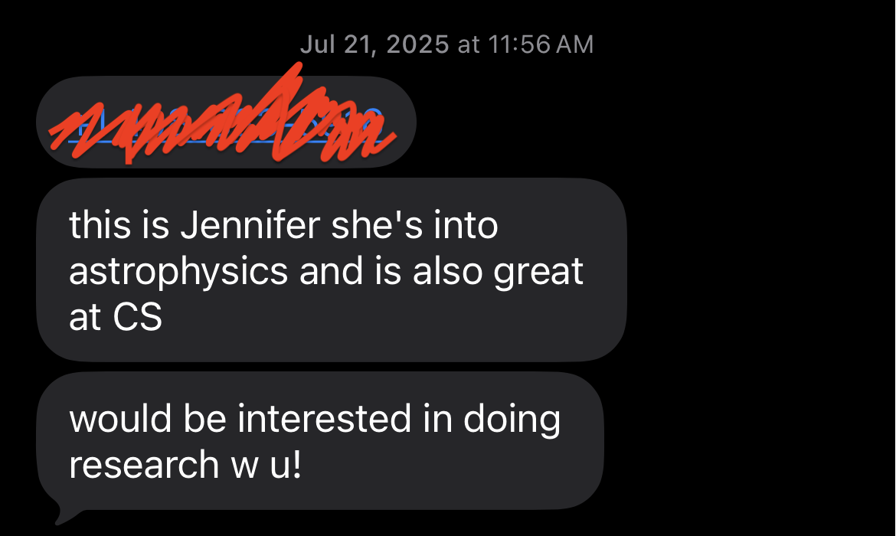
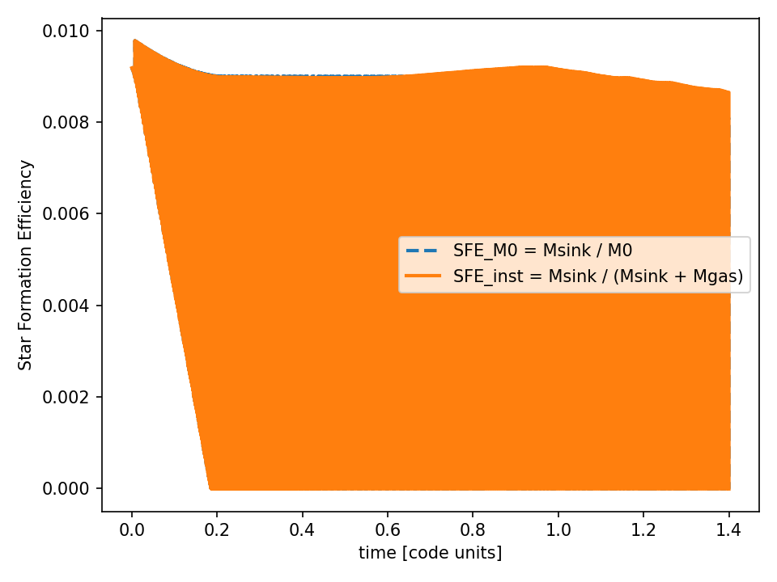
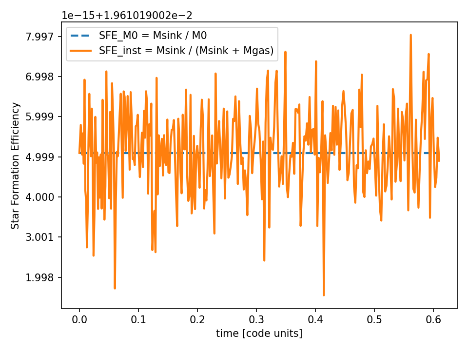
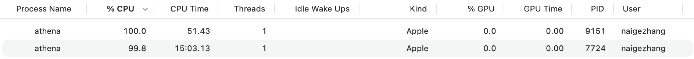
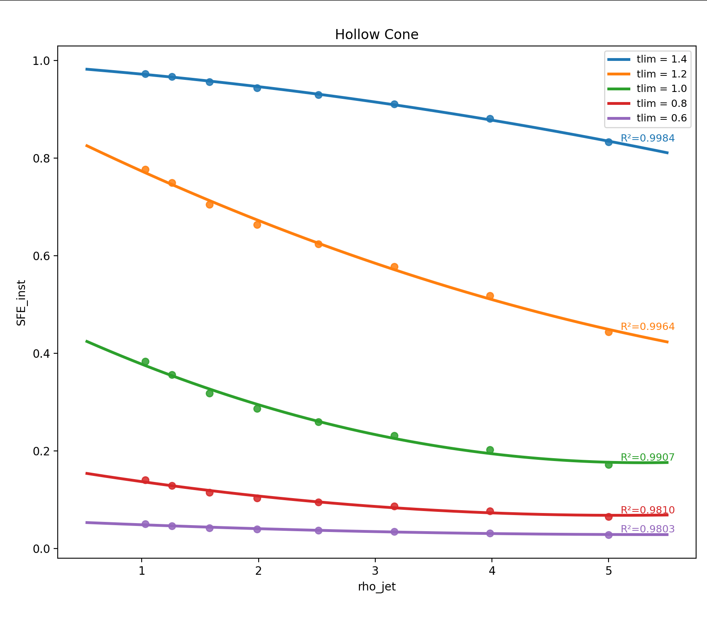

Star Formation Research
Tonight, the universe has the vastness of oblivion
and the ardor of exactitude.
Link: Research Notebook
The story began with me talking to my dear friend Stuti (whom I met in two independent summer programs without knowing that we were both applying and going) about my love for astrophysics. She connected me with her good friend Jennifer, who was also interested in astrophysics.

Jennifer and I started brainstorming astrophysics research topics in August 2025. Dark matter was not feasible (even though I dreamed of researching it one day), and neither were supernovae. Finding exoplanets felt too boring.
The process of finding the feasible and novel research question was too difficult that it took us a whole month. We eventually settled on Star Formation: "How were stars formed? What mechanisms dominating the formation process were still not fully understood?"
Finding a feasible and novel research question was so difficult that it took us a whole month. Finally, we found that the mechanism of protostellar jets, a tiny niche field within star formation, still remained unknown.
Looking back, the hardest part of this research is not learning C++, reading papers, making simulations... Rather, finding resources —— finding a mentor. Our supervisor was my CS teacher, but he couldn't help with any research part. An Astronomy staff I knew at school couldn't either, because he mainly focused on astrophotography, not astrophysics. My Physics teacher left us in the middle of school year and the new teacher was about to take over in one month ( while I was also struggling to self-study calculus physics).
I remembered attending an MIT admissions event and meeting a photographer alumnus who was so passionate when talking about his "unbelievable" journey of knocking on people's doors. I started reaching out by cold emailing 30+ researchers studying stars.
No answer, rejection, no answer, another polite rejection...
Desperately, I told Jennifer that this was not going to work. Meanwhile, while sending out unanswered emails, I entertained myself by reading as many papers about protostellar jets as possible.
ChatGPT became our first mentor at that time. With good prompts, it helped us to compare the right simulation tools for this project, learning how to conduct literature reviews, and asking deeper questions about each paper we read. Through this process, we began learning Athena++, an open source hydrodynamics simulation platform developed by Princeton researchers. We also started posting questions on its GitHub forum and learning from the wider research community.
At first, the diagrams looked like tweaking. And... It almost fried my only laptop.



Compare with the final results below, you will understand how much we have struggled.
